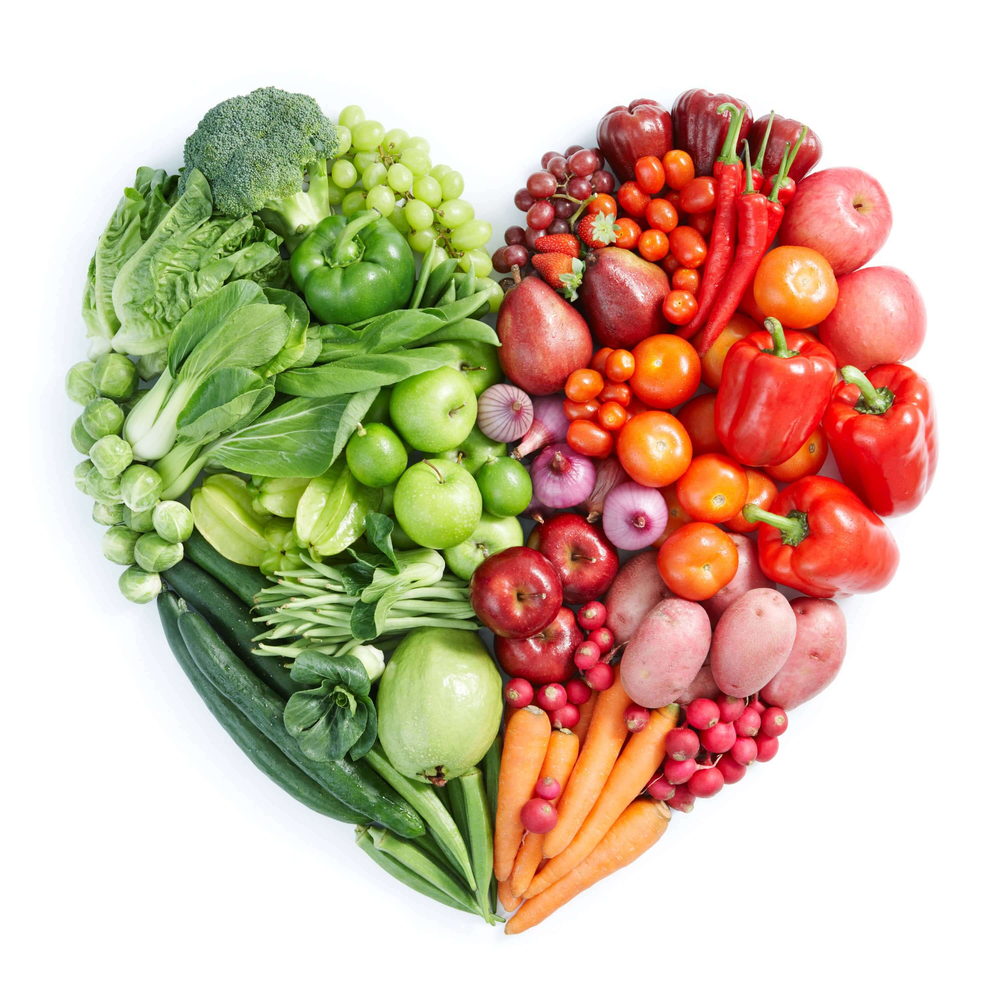

The most important and most important principle of health is to exclude everything that harms you and use what is beneficial in moderation.

Healthy lifestyle
In a healthy body healthy mind. An integrated approach to your health. Here you will find solutions to your health problems.
“At the heart of every disease is its cause, which no medicine can eliminate.”